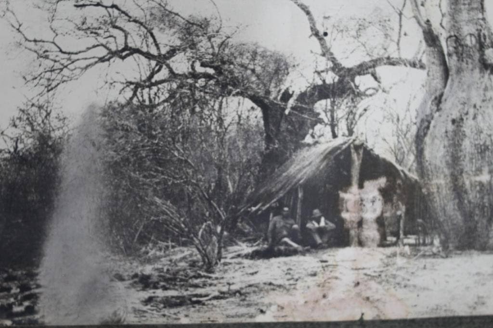

Los Ceiba chodatii o árboles de samu´u fueron aprovechados durante la Guerra del Chaco ya que sus cortezas son muy duras tanto que pueden detener los proyectiles y su interior lo suficientemente blando como para ser ahuecado con una pala, el soldado paraguayo se introducía adentro para defenderse del enemigo.
Este tipo de nidos de ametralladora fueron hechos tanto por paraguayos como bolivianos.
Además, se encuentra en el Fortín Toledo el samu´u con mayor circunferencia del tronco 9,11 m, ganador del concurso “Colosos de la Tierra” en su novena edición Año 2020.